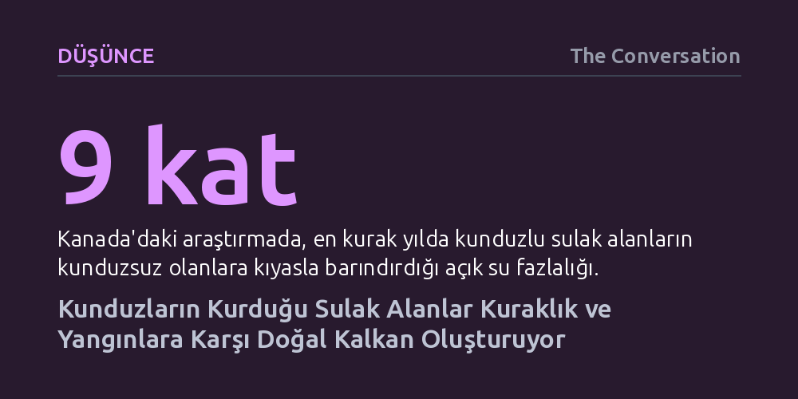

DUSUNCE · The Conversation · 2026-09-07
Kunduz barajları arazide milyonlarca litre su tutarak kuraklıkta yeşil koridorlar oluşturuyor ve olası yangınlara karşı doğal set çekiyor. Araştırmalar, kunduzlu sulak alanların kuraklıkta dokuz kat fazla su barındırdığını ve nehir kıyısı bitki örtüsünün yangından üç kat daha az etkilendiğini ortaya koyuyor.
Yüzyıllardır kurutmaya çalıştığımız sulak arazilerin ve yok ettiğimiz kunduzların, iklim krizinin tetiklediği kuraklık ve orman yangınlarına karşı en etkili doğal savunma hatlarından biri olduğunu gösteriyor.

İngiltere'nin güneybatısındaki Somerset bölgesinde yer alan Holnicote arazisi, yaz aylarının kavurucu sıcağında tozlu ve sararmış bir çoraklığı andırırken, arazinin bir köşesi dikkat çekici biçimde yemyeşil kalmayı başardı. Bu yeşilliğin arkasındaki güç insan yapımı modern bir sulama sistemi değil; İngiltere topraklarında aşırı avlanma sebebiyle 16. yüzyılda nesli tükenen ve bölgeye sadece altı yıl önce yeniden getirilen kunduzlardı. Ailenin inşa faaliyeti, küçük bir su yolunu yemyeşil bir çayıra ve kurak coğrafyanın ortasında adeta canlı bir vahaya dönüştürdü.
Bu manzara, suyun hızla tahliye edilmesine dayalı geleneksel arazi yönetimi anlayışına karşı doğanın kendi çözümünü sunuyor. İklim krizinin etkisiyle giderek sıklaşan kuraklık dönemlerine hazırlanmak isteyen toplumlar için kunduzların dönüşü, peyzajın suyu nasıl daha uzun süre bünyesinde saklayabileceğinin somut bir örneğidir. Kunduzlar akarsu yataklarını ve çevrelerindeki araziyi yeniden biçimlendirerek, yağmur suyunu anında denizlere akıtmak yerine toprağın derinliklerinde depoluyor.
Ekolojide kunduzlar sıklıkla "ekosistem mühendisi" olarak tanımlanır. Ağaç dallarını kemirip deviren bu canlılar, akarsular üzerine bentler kurar ve arazide kanallar açar. Kunduz barajlarının ardında biriken su vadi tabanına yayılır, toprağa derinlemesine sızar; zamanla havzada tortu ve organik maddelerin birikmesini sağlar. Sonuçta göletler, kanallar, bataklıklar ve ıslak orman örtüsünden meydana gelen zengin bir peyzaj mozaiği ortaya çıkar. Bu depolama mekanizması, en sıcak yaz günlerinde dahi toprağın ve üzerindeki bitki örtüsünün nemli kalmasını mümkün kılar.
Suyun arazide hapsedilmesinin bugünlerde çok daha kritik hale gelen bir diğer faydası ise yangın savunmasıdır. Yeterince nemli ve diri kalan bitki örtüsünün alev alması ve yanması son derece güçtür. Kunduzların oluşturduğu sulak alanlar, yalnızca yabani hayvanlar için güvenli bir sığınak olmakla kalmaz; aynı zamanda ilerleyen bir orman yangınının önünü kesebilecek ya da yayılma hızını kırabilecek doğal yangın emniyet şeritleri işlevi görür. Arazinin kurumasını engelleyerek yangına dirençli nemli koridorlar inşa etmek, iklim değişikliği çağında yangın yönetiminin hayati bir katmanı haline gelmektedir.
Kunduzların su tutma kabiliyeti romantik bir doğa koruma fikrinden ibaret değil; güçlü bilimsel ölçümlere dayanıyor. Kanada'nın Alberta eyaletindeki Elk Island Ulusal Parkı'nda 54 yıllık hava fotoğraflarını inceleyen 2008 tarihli bir araştırma, arazideki aktif kunduz yuvaları ile açık su alanlarındaki değişim arasında yüzde 80'in üzerinde doğrudan bir bağ olduğunu gösterdi. Üstelik çalışmada incelenen en kurak yıl olan 2002'de, kunduzların bulunduğu sulak alanların, bulunmayan bölgelere kıyasla dokuz kat daha fazla açık su barındırdığı belgelendi.
Benzer sonuçlar İngiltere'deki saha çalışmalarında da doğrulanıyor. Devon bölgesinde yoğun tarım yapılan bir arazide 2011 yılında incelenen kunduz sahasında, hayvanların inşa ettiği 13 barajın yaklaşık 1 milyon litre ilave su depoladığı tespit edildi. Kunduz barajları beton yapılar gibi tamamen geçirimsiz değildir; sızdıran gözenekli yapıları sayesinde fırtına anındaki taşkın dalgalarını yavaşlatırken, kuraklıkta alt havzaya düzenli ve yavaş bir su akışı temin eder. Devon genelindeki dört vahşi kunduz bölgesinde yapılan daha güncel ölçümlerde ise bu sulak alanların 24 milyon litreden fazla su tuttuğu belirlendi.
Yangın boyutundaki veriler de bu tabloyu pekiştiriyor. ABD'nin batısında meydana gelen beş büyük orman yangınını inceleyen 2020 tarihli bir araştırma, kunduz barajlarının bulunduğu nehir kıyısı bitki örtüsünün, kunduz bulunmayan kıyaslanabilir alanlara göre yangından üç kat daha az etkilendiğini ortaya koydu. Elbette farklı coğrafyaların bitki örtüsü ve iklim dinamikleri değişkenlik gösterse de, arazide su tutmanın yangın şiddetini belirgin biçimde frenlediği gerçeği evrensel bir ilke olarak karşımıza çıkıyor.
Kunduzların sağladığı muazzam ekolojik faydalara rağmen onları her derde deva sihirli bir formül olarak görmemek gerekir. Kunduzların hidrolojik mühendisliği denetimsiz bırakıldığında tarım arazilerini su altında bırakabilir, drenaj menfezlerini tıkayabilir ve ağaçlık alanlara zarar verebilir. Bu nedenle kunduzların doğaya yeniden kazandırılması; kapsamlı çevresel etki değerlendirmelerini, etkilenen arazi sahiplerine verilecek destekleri ve uzun vadeli yönetim planlarını zorunlu kılmaktadır. İngiltere'nin doğaya kunduz salımı için artık resmi lisans ve yönetim planı şartı getirmesi bu dengenin bir sonucudur.
Nitekim Norfolk'taki Wensum Nehri'nde kaynağı belirsiz biçimde ortaya çıkan iki kunduzun 500 yıl aradan sonra ilk kez yavru vermesi, kamuoyunda kaçak salım şüphelerini doğurdu. 1948 yılında ABD'nin sorun çıkaran kunduzları askeri paraşütlerle ücra vadilere bıraktığı sıra dışı deneye atıfta bulunan yazar, "İngiltere'nin havadan paraşütle indirilen kemirgenlere değil, planlı salımlara ihtiyacı var" uyarısında bulunuyor. Kunduzlar tek başlarına tüm peyzajı onaramaz; onların çabası turbalıkların restorasyonu, taşkın yataklarının nehirlerle yeniden birleştirilmesi ve kıyı şeritlerinin yeşillendirilmesiyle desteklenmelidir.
Gereken asıl dönüşüm, suyun hızla tahliye edilmesi gereken bir kusur değil, arazide tutulması gereken paha biçilmez bir zenginlik olduğunu kabul etmektir. Su geçirmez çizmelerin bir kusur değil ihtiyaç sayıldığı sulak alan kuşakları kurmak, yüzyıllardır kuruttuğumuz coğrafyalara can suyunu geri kazandıracaktır. Kunduzlar kuraklığı ve yangınları tek başına bitiremeyecek olsa da, suyu tam ihtiyaç duyduğumuz zaman ve yerde tutmamız için doğanın sunduğu en yetenekli ortaklardır.